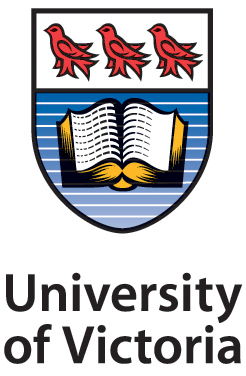
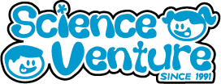

Kathryn Rieb
Software Engineering Student
About Me
Welcome to my website! My name is Kathryn Rieb, and I am currently studying software engineering at the University of Victoria. I enjoy learning and maintaining a variety of skills, and my current projects range from making android apps using SQL databases to creating VR-compatible games in Unity.
Outside of programming, my other interests include volunteering in the community,
playing the violin, baking, and painting.


kanrieb@gmail.com
Work Experience

James Evans & Associates (JEA)
Junior Database/ADF Co-Op Developer, Sept - Dec 2019
JEA is a pension systems company that provides custom pension solutions to their clients. During my time at JEA I was assigned to the PENFAX project, which involved manipulating databases with information on thousands of users, updating code to fit client requirements, and ADF interface development. I was placed on a Scrum team and completed tickets for each sprint cycle. It was a great environmet to work with more senior developers, and I learned a lot about larger company code standards. Technical skills I used for this co-op were branching and committing with SVN, writing and executing SQL scripts, and performing basic operations in Oracle ADF.

UVIC Faculty of Engineering
Systems Technical Team Co-op, Jan - Apr 2019
For this co-op position, I was hired by the security team for the UVIC Faculty of Engineering. I was given various tasks to complete, but my largest project was creating a password security tool that would track the age of passwords, and corresponding risk levels of Engineering faculty accounts. This tool displayed any publically-known security breaches that any faculty email address may have been involved in by running a nightly query with all the faculty accounts against an API and then entering the data into a database. This tool is actually still being used by the Engineering faculty and staff to monitor account security status. Through this task I learned the importance of requirements analysis and design functionality. Technical skills I used for this co-op were PHP/HTML/JS/CSS web design and running complex SQL queries for large databases.

Science Venture
Camp Instructor Co-op, May - Aug 2018
Science Venture is a non-profit organization located in Victoria, BC, that provides science, engineering, and technology education for youth on Vancouver Island. As my first co-op, I will never forget my experience working at Science Venture. This co-op term involved working with a large team of other people to plan and deliver STEM workshops to schools and foster excitment in young students about science. Over the summer we travelled to multiple schools per week all over the Greater Victoria area, and later hosted summer camps that we had to completely design ourselves. I learned valuable teamwork, organization, time-management, public speaking and communication skills that I use in my life to this day.
Volunteer Experience
UVic Seniors Program
Sep 2018 - Present
The UVic Seniors Program is a student-run program that aims to assist seniors with basic technology. There are four sessions each year, and the topics cover Google, Email, Social Media, and Microsoft Word. As a general volunteer, I am able to provide one-on-one assistance for attendees and answer any additional questions they may have. This experience has been extremely rewarding as I am able to make a direct positive impact for the members of my community.
The University of Victoria
Aug 2018 - Present
I have volunteered for multiple events at UVIC, including:
- • UVic Orientation and Student Recruitment - As an orientation leader, it was my job to guide a group of incoming Engineering undergraduate students around campus, and recite necessary information
- • Explore UVic - For this event, I was a student representative for the BSeng program and I answered questions from potential UVic students
- • UVic Convocation - I acted as a diploma framer and general organizer